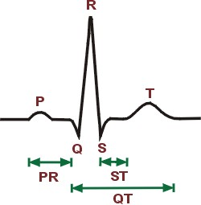

|
Richard E. Klabunde, Ph.D. |
| Electrocardiogram
(EKG, ECG)
As the heart undergoes depolarization and repolarization, the electrical currents that are generated spread not only within the heart, but also throughout the body.This electrical activity generated by the heart is generally measured by an array of electrodes placed on the body surface and the resulting tracing is called an electrocardiogram (ECG, or EKG). A "typical" ECG tracing is shown below. The different waves that comprise the ECG represent the sequence of depolarization and repolarization of the atria and ventricles. The P-wave represents the wave of depolarization that spreads from the SA node throughout the atria and is usually 0.08 to 0.1 seconds (80-100 ms) in duration. The brief isoelectric (zero voltage) period after the P-wave represents the time in which the impulse is traveling within the AV node where the conduction velocity is greatly retarded. The period of time from the onset of the P-wave to the beginning of the QRS is termed the PR interval and normally ranges from 0.12 to 0.20 seconds. This interval represents the time between the onset of atrial depolarization and the onset of ventricular depolarization. If the PR interval is >0.2 sec, a conduction defect (usually within the AV node) is present (first-degree heart block). The QRS complex represents ventricular depolarization. The duration of the QRS complex is normally 0.06 to 0.1 seconds indicating that ventricular depolarization normally occurs very rapidly. If the QRS complex is prolonged (> 0.1 sec), conduction is impaired within the ventricles. This can occur with bundle branch blocks or whenever a ventricular foci becomes the pacemaker driving the ventricle. Such an ectopic foci nearly always results in impulses being conducted over slower pathways within the heart, thereby increasing the time for depolarization and the duration of the QRS complex. The isoelectric period (ST segment) following the QRS is the time at which the entire ventricle is depolarized and roughly corresponds to the plateau phase of the ventricular action potential. The ST segment is important in the diagnosis of ventricular ischemia or hypoxia because under those conditions, the ST segment can become either depressed or elevated. The T-wave represents ventricular repolarization and is longer in duration than depolarization (i.e., conduction of the repolarization wave is slower than the wave of depolarization). The QT interval represents the time for both ventricular depolarization and repolarization to occur, and therefore roughly estimates the duration of an average ventricular action potential. This interval can range from 0.2 to 0.4 seconds depending upon heart rate. At high heart rates, ventricular action potentials shorten in duration, which decreases the QT interval. Because prolonged QT intervals can be diagnostic for susceptibility to certain types of arrhythmias, it is important to determine if a given QT interval is excessively long. In practice, the QT interval is expressed as a "corrected QT (QTc)" by taking the QT interval and dividing it by the square root of the RR interval (interval between ventricular depolarizations). This allows an assessment of the QT interval that is independent of heart rate. Normal corrected QTc intervals are less than 0.44 seconds. There is no distinctly visible wave representing atrial repolarization in the ECG because it occurs during ventricular depolarization. Because the wave of atrial repolarization is relatively small in amplitude, it is masked by the much larger ventricular-generated QRS complex. ECG tracings
recorded simultaneous from different electrodes placed on the body will
produce different characteristic waveforms. To learn where ECG electrodes
are placed, CLICK
HERE.
|
|
Last Revised: 01/29/2001 |